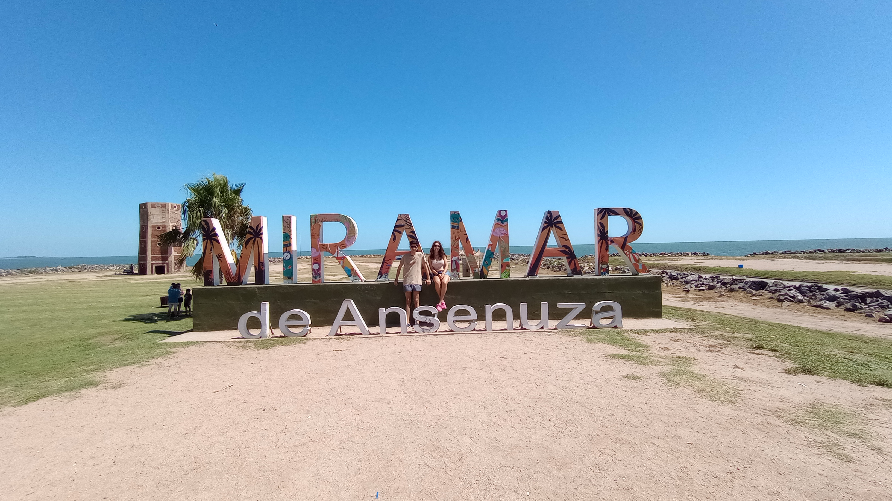
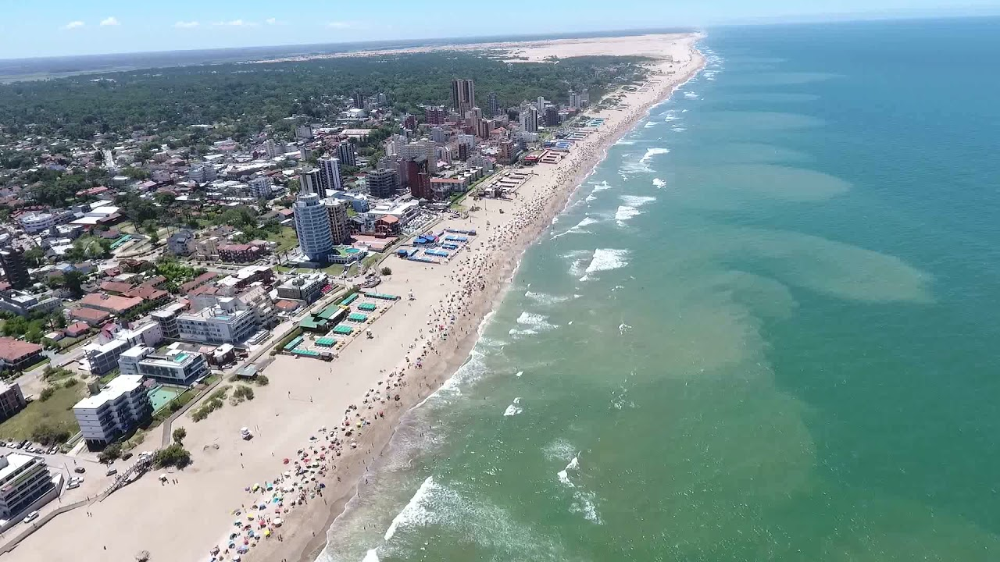
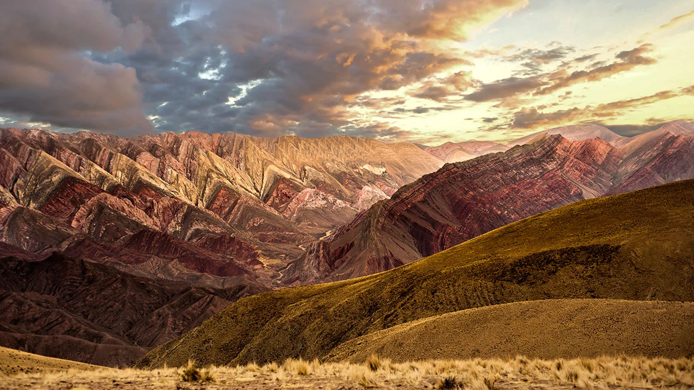
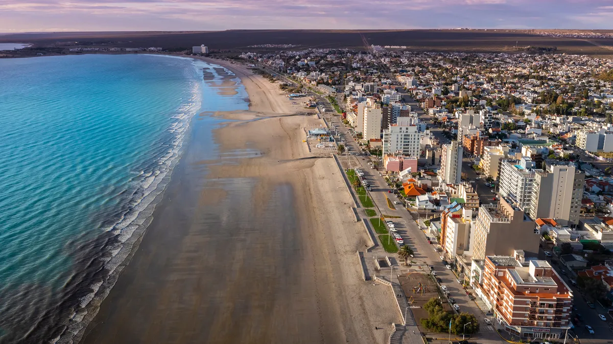

Lugares que tenés que conocer en nuestro hermoso pais "Argentina"
Un veloz recorrido por sitios y paisajes para atesorar en la memoria. Para que agenden turistas y viajeros.
Vacaciones en Miramar, Córdoba


Miramar te suena a sol, a playa, a deportes de agua y arena, a verano. En esta nota te mostramos que podés tener todo éso en la provincia más central de la Argentina: te ofrecemos vacaciones en Miramar, Córdoba. Es la quinta laguna salada más grande del mundo, en el noreste provincial. Naturaleza asombrosa en un enorme espejo de agua que asemeja un mar interior. Es una reserva de aves de renombre mundial: un sitio de avistaje de fauna que deslumbra. Sus valores lo han llevado a ser designado como Parque Nacional, ya aprobado por ley. Miramar, la única localidad costera, es su principal centro turístico.
Vacaciones en Villa Gesell, Buenos Aires
Villa Gesell, ubicada en la provincia de Buenos Aires, es un destino costero que combina la belleza del Atlántico con la naturaleza agreste de los bosques. cuenta con 60 km de playas de arenas finas, ideales para relajarse y disfrutar del mar. Además, sus bosques de pinos y médanos ofrecen un entorno natural único.Visita el Faro Querandí, un recorrido en vehículos 4x4 que te llevará a este faro solitario en medio de las dunas. También puedes explorar la Reserva Dunas del Norte, un espacio natural protegido. La movida nocturna en Villa Gesell es intensa. Teatros, pubs, boliches y bingos satisfacen las necesidades de quienes buscan diversión después del atardecer.
Vacaciones en Jujuy, Jujuy
Jujuy, la provincia norteña de Argentina, es un destino que cautiva con su belleza natural, colores vibrantes y una rica herencia cultural. La Quebra de Humahuaca fue declarado Patrimonio de la Humanidad por la UNESCO, es un desfiladero de montañas que alberga pueblos pintorescos, como Purmamarca con su Cerro de los Siete Colores y Tilcara con su Pucará Una atraccion que no te podes perder es Salinas Grandes, un vasto desierto de sal que se extiende hasta donde alcanza la vista. El blanco brillante contrasta con el cielo azul y crea un paisaje surrealista. En resumen, Jujuy es un destino para los amantes de la naturaleza, la cultura y los paisajes únicos.
Vacaciones en Puerto Madryn, Chubut
Puerto Madryn, ubicado en la costa patagónica de Argentina, es un destino que combina mar, naturaleza y vida silvestre. La temporada de ballenas se extiende desde junio/julio hasta diciembre. Embarcarse para ver a estas majestuosas criaturas de cerca es una experiencia inolvidable, además de las ballenas, puedes ver delfines. La Península Valdés, Esta reserva natural es Patrimonio de la Humanidad. Explora sus playas, avista lobos marinos, elefantes marinos y pingüinos, y admira las vistas panorámicas.